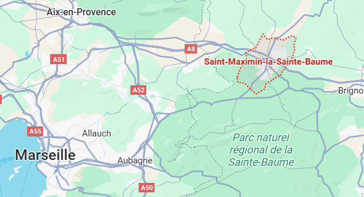
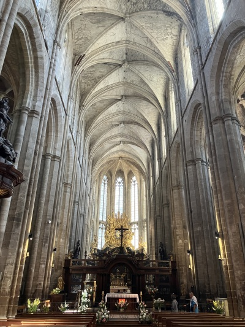
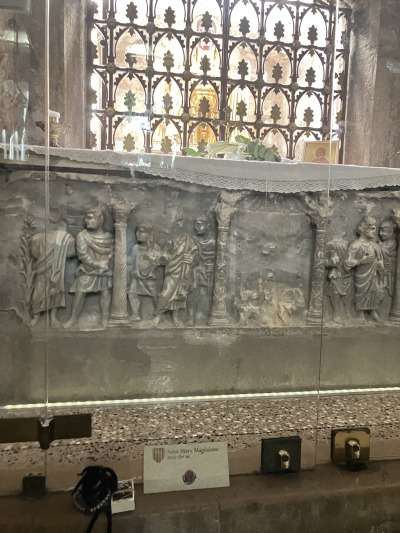
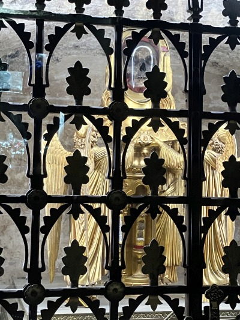
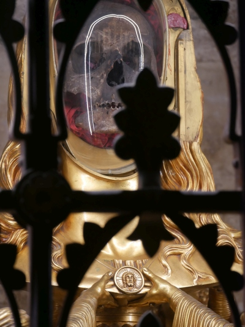
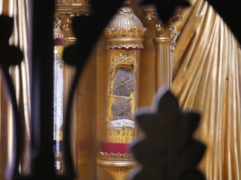
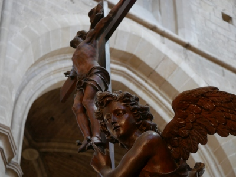
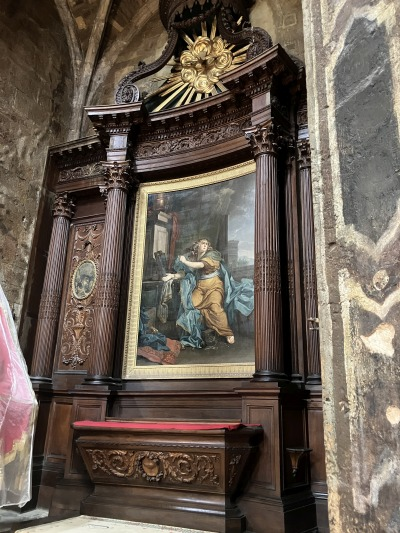
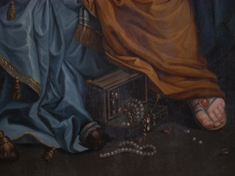

 About 15 miles northeast of Sainte-Baume is the town of Saint-Maximin, site of St. Mary Magdalene's Basilica and most precious relic - her skull |
 Your intentions in the lower grotto with her reliquary. The priest gave me permission to slip your intentions behind the glass, next to her altar |
 The reliquary containing her skull and the part of her forehead flesh where Christ touched her on Easter Sunday |
|---|---|---|

When her skull was investigated in 1974, it was found to be from a Mediterranean woman in her 50s |
 The noli me tangere relic - the flesh where Christ touched her |

It suits her basilica to have angels in it - they assist us and point the way to God |

I was particularly impressed by this painting inside her basilica. At first glance it appears a bit gaudy and emotional, but the more I looked at it the more I saw. |
She is illuminated from above with what must be an inspiration to repentence and the call of true love. She is overweight, weighed down by the pleasures of the world and the residue of sin. She is casting off her expensive garments and her jewelry is spilled at her feet. |

|